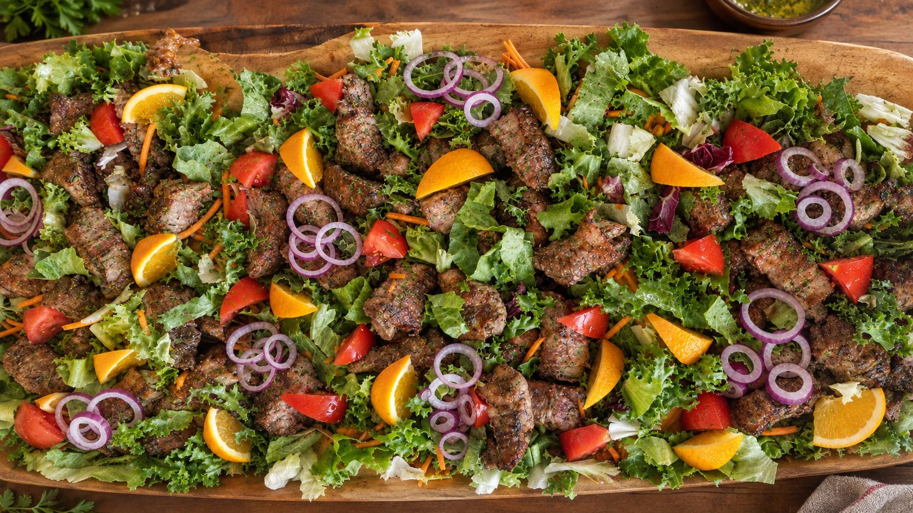
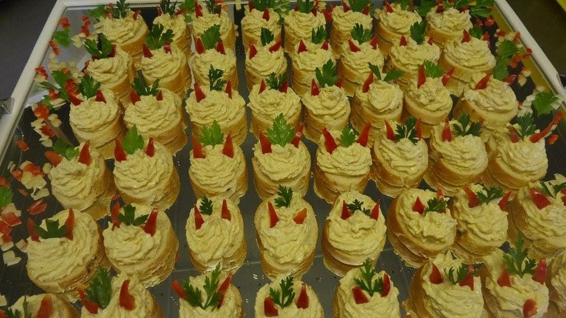
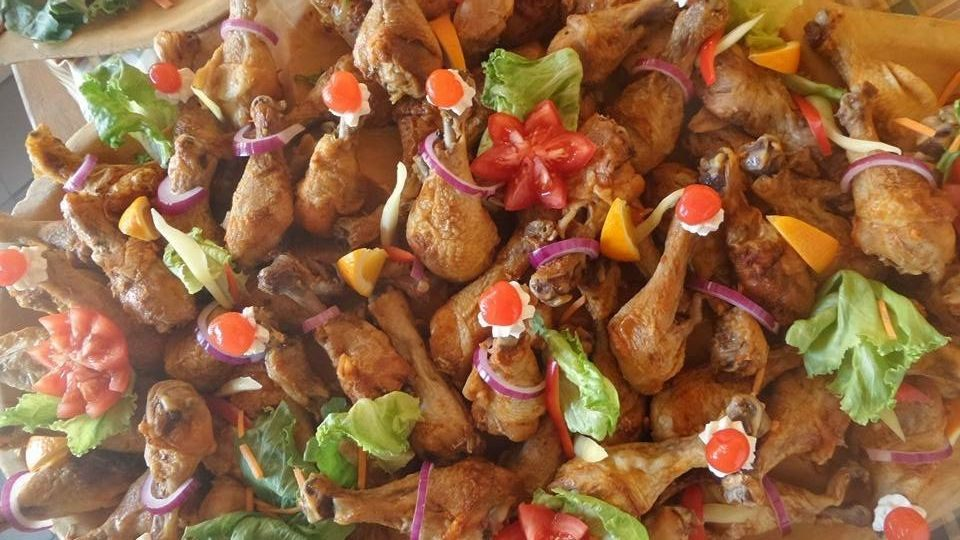

Tiszafüred · Fő út 8.
Nemzeti Étterem
és Sütöde
Éttermi vendéglátás a város központjában — á la carte étlap, napi menü, és rendezvényekre készített tálak.
Hétfő–péntek 11:00–14:00
Az étterem
Házias magyar konyha
a Fő úton
A Nemzeti Étterem Tiszafüred központjában, a Fő út 8. szám alatt működik. Az étlapon a klasszikus magyar konyha ételei szerepelnek: levesek, készételek, frissensültek, gyermekmenük és köretek.
Az étterem az á la carte kínálat mellett napi menüt is főz, valamint közétkeztetést biztosít — bölcsődei, óvodai, alsó és felső tagozatos, illetve középiskolás menük készülnek a konyhán. A heti menüsorok PDF-ben, hétről hétre frissülve érhetők el.
Az étterem szomszédságában saját pékségünk is működik.


Á la carte
Étlap
Rendezvények
Tálak, amiket
eddig készítettünk
Az alábbi képek korábbi rendezvényeinkre készült tálakról származnak: hidegtálak, töltött szendvicsek, sonkatekercsek, sültes és salátás tálak.
Az étterem 80 fő befogadására alkalmas. Rendezvényre szóló ajánlatért — létszám, időpont és kínálat egyeztetéséhez — kérjük, keressen minket telefonon.


Galéria
A konyháról
Az étterem saját fotói tálalt ételekről és rendezvényi tálakról.
Kapcsolat
Merre talál minket
- Cím
- 5350 Tiszafüred, Fő út 8.
- Telefon
-
59/352-349
59/511-212 - nemzet1@t-online.hu
- Fizetés
- Bankkártya, SZÉP-kártya
- Nyitvatartás
- Hétfő–péntek: 11:00–14:00
Szombat–vasárnap: zárva